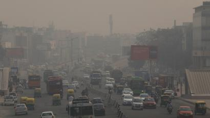

India has the worst air pollution in the entire world, and this problem has attracted special attention in India due to the increase in population, industrialisation and urbanisation. Air pollution has been just below , tobacco smoking, indoor air pollution, blood pressure, diabetes among the top ten killers. This phenomenal has affected many aspects in India and the most crucial aspect is the health side of it population. India has made fast strides in industrialisation, and it is one of the ten most industrialised nations worldwide. However this status, has brought with it unwanted and unexpected consequences such as unplanned urbanisation and pollution.
Outdoor air pollution has emerged as a major health risk in developing countries, contributing to some 3.2 million premature deaths worldwide and 74 million years of healthy life lost in 2010 and India is particularly at risk.